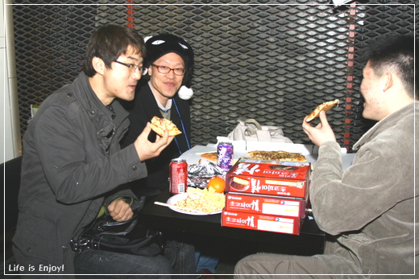

POSTS
간만에 즐겨보는 목아픈 수다. - 제1회 블로그 축제
제1회 블로그 축제
간만에 즐겨보는 목아픈 수다.
혜민아빠님, 자원봉사단 여러분들 고생 많으셨어요~
그러나 아쉬웠던 점은
블로거가 아닌 분들이 왜 그리 많은지요?
즉. 블로거의 입장이 아닌 ‘블로거를 대상으로 바라보는 입장’으로 오신 분들이 꽤 보였다는 점.
(블로깅여부는 제쳐두고~)
그분들과의 만남이 무의미하다는 것은 아니지만,
입장이 다르면 공통 수다거리가 줄어드는것은 어쩔 수 없잖아요~
(블로그 축제를 위해 장만한 “다리가 긴 고양이모자” 하하. 저것이 다리였다니… ㅠㅠ)
[출처 : http://bklove.net]

[출처 : http://khn97.tistory.com]
-
 원심무형류 2008/03/01 13:00 # 답글 '블로거를 대상으로 바라보는 입장'... 표현이 공감 가네요.
원심무형류 2008/03/01 13:00 # 답글 '블로거를 대상으로 바라보는 입장'... 표현이 공감 가네요. -
 Chaple 2008/03/01 21:27 # 삭제 답글 처음에 앉은 자리에서 마지막으로 온 채플(양한석)입니다. ^^*
Chaple 2008/03/01 21:27 # 삭제 답글 처음에 앉은 자리에서 마지막으로 온 채플(양한석)입니다. ^^*
명함보고 따라왔습니다.
즐거운 하루 되세요~